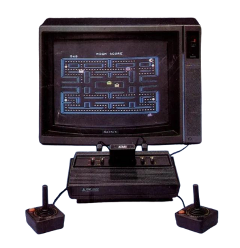
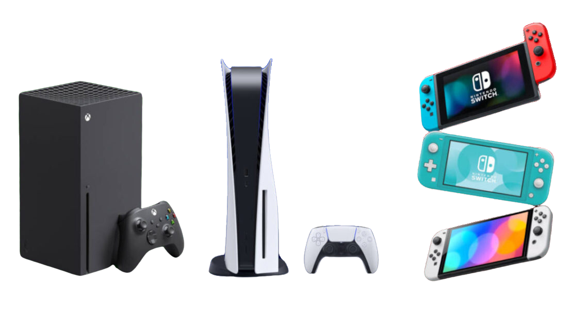

A História dos jogos digitais
Hoje em dia, temos acesso a consoles de última geração, jogos que imitam fielmente a realidade e até experiências imersivas que nos fazem sentir parte da aventura. Mas você já parou para pensar de onde surgiram os games? Como evoluíram os consoles que conhecemos hoje? Quem foi a primeira pessoa a jogar um videogame? Em nosso site, vamos explorar a fascinante história dos jogos digitais, desde os primórdios dos arcades até as mais recentes inovações em realidade virtual. Descubra as mentes brilhantes por trás dos primeiros jogos, os marcos históricos que moldaram a indústria e as curiosidades que você provavelmente nunca ouviu falar. Embarque conosco nessa viagem ao passado para entender como chegamos ao incrível mundo dos games modernos!
A primeira versão
Em 1972, o engenheiro alemão Ralph Baer criou o primeiro console de videogames, o Magnavox Odyssey. A ideia surgiu em 1966, e o primeiro protótipo, chamado Brown Box, foi feito em 1968. O Odyssey, vendido por cerca de 100 dólares (equivalente a 550 dólares ou 2200 reais hoje), teve relativo sucesso, vendendo 100 mil unidades, apesar de suas limitações, como a falta de som e cores nos jogos. Para melhorar a experiência visual, os jogadores usavam filtros plásticos na TV. O Odyssey vinha com dados, fichas de poker, dinheiro falso e tabelas de pontuação, transformando-o em um jogo de tabuleiro digital. Em 1977, o Atari foi lançado, marcando outra revolução na história dos games. Nollan Bushnell, que consertava fliperamas em Utah, apresentou sua ideia de criar um novo fliperama a Ted Dabney após deixar seu emprego
.png)
Essa primeira versão não tinha sons, cores, ou ambientes complexos, além disso o usuário precisava colocar uma fita plástica na frente da tela da tv, para dar a ilusão de linhas, cenários, cores e contornos.
Surge uma nova versão
Em 1976, a Atari foi vendida para a Warner Communications por US$ 28 milhões, permitindo maior desenvolvimento e distribuição. Em 1977, a Atari lançou o Atari 2600, originalmente chamado de Atari VCS (Video Computer System), que se tornou um sucesso de vendas e consolidou a marca no mercado de videogames domésticos. O Atari 2600 incluía cartuchos intercambiáveis, permitindo aos jogadores escolher entre diversos jogos. Em 1980, a Atari lançou "Space Invaders" para o Atari 2600, aumentando ainda mais sua popularidade. No entanto, a empresa enfrentou dificuldades no início dos anos 1980 devido à saturação do mercado e à crise dos videogames de 1983.
A primeira versão do console Atari não tinha sons, cores ou ambientes complexos. Para jogar, o usuário precisava colocar uma fita plástica na frente da tela da TV para dar a ilusão de linhas, cenários, cores e contornos. O console utilizava cartuchos intercambiáveis para diferentes jogos e possuía controles simples, com alavancas e botões únicos, refletindo a simplicidade tecnológica da época.
Versões atuais
As versões atuais de consoles de videogame são verdadeiras potências tecnológicas. O PlayStation 5 (PS5), desenvolvido pela Sony, oferece gráficos de alta qualidade, suporte para 4K e 8K, e tempos de carregamento rápidos graças ao SSD ultrarrápido. Os Xbox Series X e Series S, lançados pela Microsoft, apresentam desempenho avançado, com o Series X suportando 4K e ray tracing, enquanto o Series S é mais acessível, oferecendo desempenho sólido em 1440p. Já o Nitendo Switch é conhecido por sua versatilidade, podendo ser usado como console de mesa e portátil, e oferece jogos exclusivos da Nitendo com uma jogabilidade única através dos controladores Joy-Con destacáveis. Esses consoles proporcionam gráficos impressionantes, desempenho avançado e amplas bibliotecas de jogos digitais.